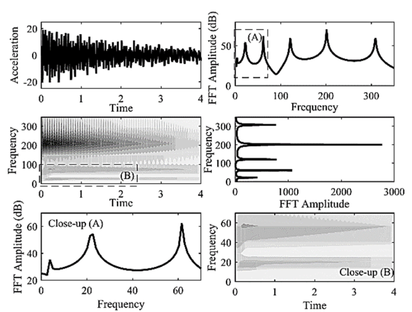

Nonparametric system identification of a cantilever beam model with local nonlinearity in the presence of artificial noise
Modares Mechanical Engineering (in Persian, National Journal), 16(11), pp.177-186, 2016. Journal paper

Abstract
In this paper the effect of artificial noise on the performance of nonlinear system identification method in reconstructing the response of a cantilever beam model having local nonlinearity is investigated. For this purpose, the weak form equation governing the transverse vibration of a linear beam having a strongly nonlinear spring at the end is discretized by using Rayleigh-Ritz approach. Then, the derived equations are solved via Rung-Kutta method and the simulated response of the beam to impulse force is obtained. By contaminating the simulated response to artificial measurement noise, nonparametric nonlinear system identification is applied to reconstruct the response. Accordingly, intrinsic mode functions of the response are obtained by using advanced empirical mode decomposition and nonlinear interaction model including intrinsic modal oscillators is constructed. Primary results show that the presence of noise in the response highly affects the sifting process which results in extraction of spurious intrinsic mode functions. In order to eradicate the effect of noise on this process, noise signals are used as masking signals in the advanced empirical mode decomposition method and intrinsic mode functions corresponding to the noise are extracted. Based on this approach, the dynamic of the noise in the response is identified and noise reduced signals are reconstructed by the intrinsic modal oscillators with suitable accuracy.